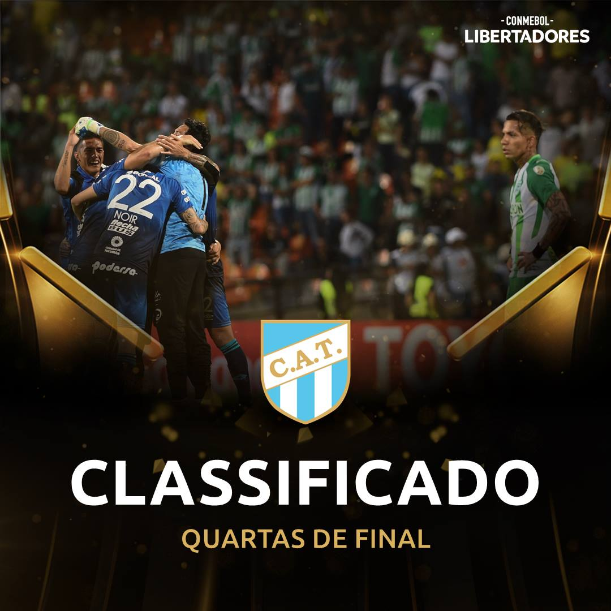
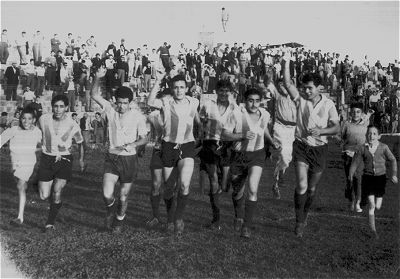

Campeones de la B Nacional año 2015 Jugando con la camiseta de la Selección Argentina Luis Miguel Rodriguez maximo ídolo del club Hinchada de Atletico Tucumán Atletico Tucumán entre los 8 mejores de América Atletico Tucumán campeón 1960